算子合同 PASS
28 布局的 A、Aᵀ、mask 与 Q_audit 已锁定；实验中不修改冻结 FNO。
目标不是“换一个网络名字”，而是在同一数据、误差与成本预算下，提出可被机制对照否定的 BOST 算子。v3k-E 已完成 FNO/ridge 双起点上的 BB1、BB2 与 alternating projected BB：同预算均值加速成立，但 validation 尾部和 noise OOD 失败。下一步开发 noise-aware stopping 与全调用记账 SPG，不训练 conditional scalar。
v3k-B 否定了 scalar angle attention；v3k-C 证明经校验的 adjoint residual 确实能改善当前 synthetic warm start。这不是新算法，而是把创新门槛从“胜 raw FNO”推高到“胜调优的数值迭代”。
28 布局的 A、Aᵀ、mask 与 Q_audit 已锁定；实验中不修改冻结 FNO。
inner-product 最大误差 1.94e-15，finite-difference gradient 最大误差 2.44e-8。
β=1.9,T=64 在 validation 相对 feasible FNO 改善 44.60%。
β/Lₘ，不是全局绝对步长。global、geometry、quadratic、lookup 与 ridge-start 已按 A/Aᵀ 账本比较。
BB1/BB2/alternating、clip、fallback 与 128-call 公平预算已经独立复算。
平均加速成立；validation tail 与 noise-OOD 门禁失败。先做 whitened discrepancy、residual whiteness 与全调用记账 SPG，再判断是否需要学习停止。
确定性 stopping 与 fresh lock 未完成前，不训练 scalar，不开 voxel/set/attention。validation-only 同时筛选 ridge lambda、FNO/ridge 双起点、global/geometry/quadratic/lookup。选择承诺写入后才计算 Q_audit 与四个已查看 development domains。
FNO quadratic 的 validation field L2；相对 feasible FNO +45.5258%。
FNO geometry Landweber，64 A + 64 Aᵀ。
quadratic 相对 geometry 的 validation 平均收益；使用额外 65 次 A。
quadratic 相对更便宜 geometry baseline 的平均反向。
低/高谱区都选回 β=1.9,T=64。
逐场规则选择的不可部署上界；67.5% 场由非单一冠军最好。
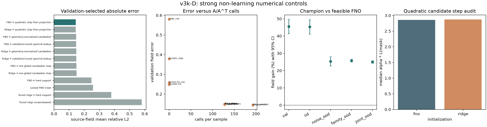
strict/wide PBB 分开在 validation 选择，选择承诺写入后才打开四个 development audit 域。每步严格计 1A+1Aᵀ；field、reprojection 和最终 objective forward 不混入求解器预算。
wide alternating PBB 的 validation field L2；fixed Landweber 为 0.147083。
PBB 与 geometry Landweber 都使用 64 A + 64 Aᵀ。
独立字段退化超过 1%；p10 gain 为 -14.04%。
继续降低 data objective 时，真实场误差已进入半收敛反向。
非首 BB1 steps 被 1.9/L 上界裁剪，轨迹退回 fixed-step。
更充分数据一致性在形态压力域有价值，但不能抵消噪声失败。
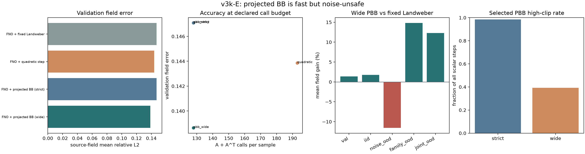
这里只验证 zero-init、冻结底座和数据分离，没有测试重建 superiority。
适配器初始输出必须与基础 FNO 逐元素一致。
基础 FNO 冻结，只训练 set encoder、risk gate 和 zero-init head。
全新 IID/noise/thin-front/joint 开发场，不与 v3b 样本复用。
导师确认 geometry、强基线、分析脚本和失败规则前，不生成最终种子，不允许确认性结论。
三个种子从同一 FNO checkpoint 分叉，continued FNO 和 adapter 使用相同追加 12 epochs、batch order、loss、learning rate 与 validation rule。
adapter 必须超过同 checkpoint 的 continued FNO，而不是只超过训练不足的 base。
ray-set 分支有小幅正信号，但收益不足以抵消冻结底座的机会成本。
24 epochs FNO 尚未饱和；新结构必须和充分收敛的对手比。
per-view 3D encoder 参数少但计算密集；后续必须同时审计 wall time 与推理延迟。
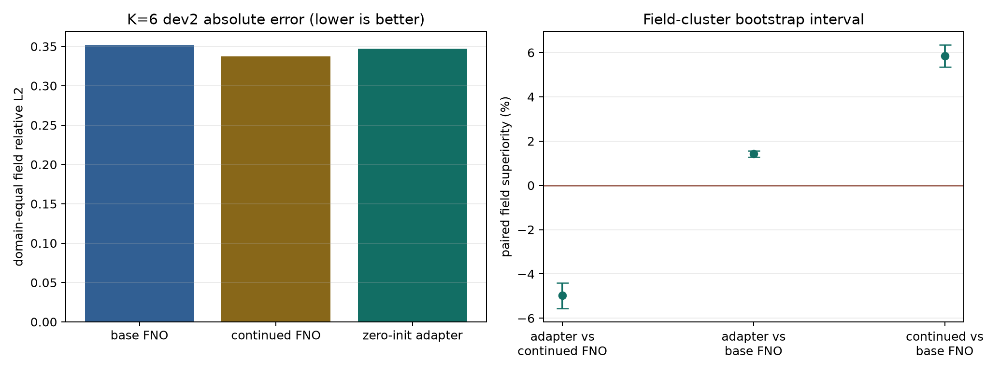
不继续扩大 frozen per-view 3D adapter。它在四个 dev2 域全部输给 continued FNO，且训练和推理更慢。
以 NeurIPS 2025 F-Adapter 为最近邻强基线，检验 BOST 相机/光线采集几何能否条件化频带 adapter；不再搭建独立大分支。
三种子沿用 v3c 的 K=6 输入、ridge anchor 和 24-epoch base schedule；每个 continuation block 从选中 checkpoint 出发，并重置 AdamW/cosine schedule，只用 validation 决定是否保留。
24→96 epochs 的三种子 mean validation L2；test 和 Q_audit 不参与停止点选择。
末个 block 必须低于 mean 0.5% / max-seed 1.0%，并连续满足两次。
相对 epoch 24 的 field improvement，仅作后置解释，不用于选 epoch。
三种子到 96 epochs 的平均累计训练时间；公开结果不含权重或 NPZ。
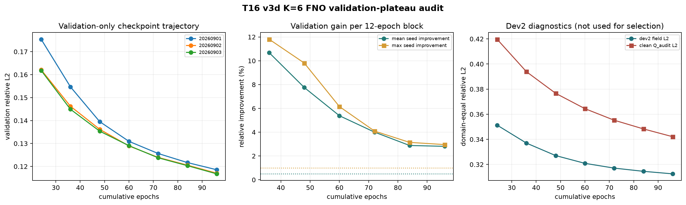
24/36-epoch FNO 不能作为“强且已收敛”的最终对手；这一步触发了后续三 optimizer protocols 审计。
240-epoch 审计已在下一节锁定固定 epoch FNO baseline；本节保留为训练不足如何制造虚假创新的证据。
三条策略共享同一 24-epoch checkpoint 与每 block batch-order contract；continuation Adam 在 base 后新建，只在 continuation blocks 间保留 moments。训练从 raw endpoint 继续，全部冻结后才读取 dev2。
固定 epoch FNO 审计中必须击败的 optimizer protocol。
三种子 epoch-240 prefix-best mean validation L2。
validation 冠军仍需满足连续末端两 block 的 0.5% / 1.0% plateau 规则。
相对共同 epoch-24 base 的 field 改善，只作冻结后的诊断。
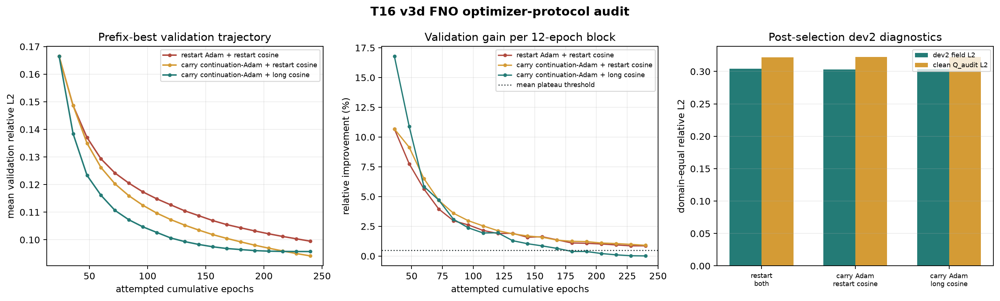
冻结 carry continuation-Adam + restart cosine · 240 epochs。v3e 已补五架构成本账本；跨架构结论还需共同的 60/120/180/240 error–compute curves。
冠军仍未 plateau，geometry 未确认；v3e 虽已补成本 schema，但 matched error–compute curves 仍缺。blind final、确认性 superiority、NeRIF 特权 refinement 与论文标题继续关闭。
待读取
平均好不等于尾部安全；必须同时看 p10、harm 与最差 OOD 域。待读取
若自有模型只赢约 1%，optimizer protocol 足以解释该差值。固定 epoch 与双闸门 brief机器报告validation 轨迹配对诊断训练脚本geometry/data 清单
每个模型用三个全新 Python worker，在同一 K=6、8×16×16、42-channel 输入上测量。FLOPs-v1 是带边界的解析估计，MPS 时间和内存是实测；这里不使用误差给架构排性能名次。
成本锚点；唯一已有 24→240 validation trajectory 的架构。
固定网格 DeepONet 的推理与完整训练步成本。
逐视角 3D encoder 的成本不能被相近参数量掩盖。
只更新 4,988 参数，仍需执行 frozen FNO 与 set encoder。
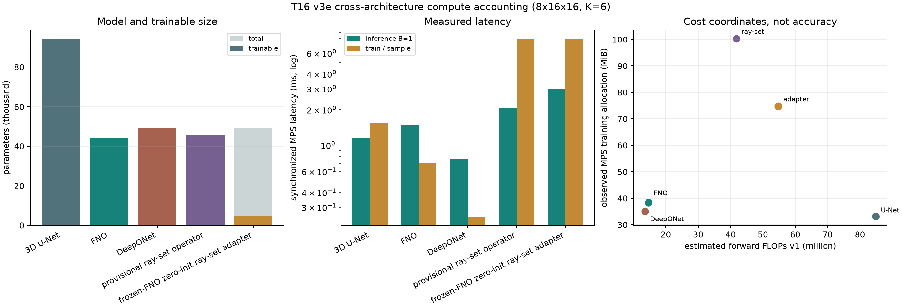
| 成本结果载入中。 |
待读取
PEFT 减少 optimizer state，不自动消除前向、激活或逐视角编码成本。待读取
终点误差、固定时间误差和达到阈值的最短时间必须同时报告。15 个独立 worker、五模型 cost profile、参数/解析 FLOPs/MPS 时间/内存、FNO 固定 checkpoint 与 time-to-target、provenance hashes 和 validator。
v3f-v3g 已补 DeepONet/FNO 前沿与 DeepONet 容量审计；U-Net、F-Adapter 与 GC-SRO 候选仍缺共同的 60/120/180/240 validation curve。真实 geometry、端到端 NeRIF 和 blind final 继续关闭。
DeepONet 先做四学习率、三种子的 validation-only screen，再复用 FNO 的 24→240 epoch 三优化协议。跨架构赢家先由每个三维场等权的 epoch-240 validation 冻结，之后才计算 128 个复用 dev2 场与 clean Q_audit；dev2 在早期版本已查看，不是全项目的新盲集。
只由三种子 epoch-240 mean validation L2 决定。
当前固定网格 DeepONet 与 FNO 最终验证误差。
DeepONet 四个固定 checkpoints 是否存在更快且更准的 FNO 见证点。
冻结赢家后的 field CI、p10、harm、域与种子诊断。
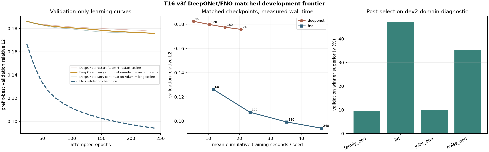
| 前沿结果载入中。 |
时间来自同一台 Apple Silicon MPS 的不同训练运行，不是 interleaved fresh-worker benchmark；开发结论同时保留 v3e 单步成本，投稿前需重测端到端 time-to-quality。
待读取
这里只否定当前 pooled branch + rank-48 global trunk basis，不外推到所有 DeepONet。保留 FNO 三维空间混合；DeepONet/set branch 只编码 ray、mask、angle 与 calibration，再以 zero-init 方式调制少量 spectral groups。
工作名不等于原创性；必须通过 static、geometry shuffle、mask-only 和 parameter-matched FNO 消融。v3g 已把原计划升级为 8 架构 × 3 学习率 × 3 种子的完整 validation-only screen，并只给短程冠军补三种子 240-epoch 曲线；结果见下一节。
真实 geometry、组内 BOST 数据、新的 untouched blind final、确认性 superiority、GC-SRO 原创性与端到端 NeRIF 比较均未完成；当前 gate pass 只说明 FNO 是稳定强 control。CI 折叠模型种子后重采样场，三 seed 只作方向诊断。
八个可训练 DeepONet 变体覆盖 rank 32/48/64/96 与不同三维池化分配，每个在三个学习率、三个种子上固定训练 24 epochs；两个高分辨率变体因超过 1.5× 参数上限在训练前排除。只有验证集冠军进入三协议 240-epoch 延长，selection commit 之后才读取已复用 dev2。
三种子 mean validation 选择架构与学习率。
完整搜索成本与未进入最终曲线的成本分开报告。
短程冠军与 v3f rank-48 reference 的 240-epoch validation。
相对 reference 的 field-cluster CI、p10、harm 与种子方向。
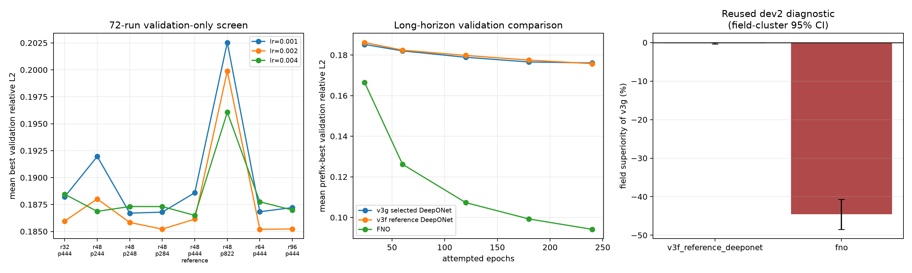
| 容量筛选结果载入中。 |
本协议只延长短程冠军；第二名 pool 2×8×4 与第三名 rank 96 没有 240-epoch 曲线。结论只是在预声明预算内没有找到可替换 rank-48 reference 的候选。
待读取
早期优化速度、最终误差与 scheduler 交互是三件事；必须报告冠军差距、排名稳定性与搜索成本。毕设执行档冻结 v3f rank 48；只有师兄明确认为投稿审稿会要求时，才一次性预注册 top-3 long-horizon 补充，不允许看 dev2 后继续扩表。
保留 FNO 的三维空间混合，把 branch/set encoder 用作 acquisition conditioner；必须同时击败 parameter-matched wider FNO、static adapter、mask-only 与 shuffled-geometry controls。
对 9 个候选角度固定留出 60°，枚举其余 8 中选 6 的全部 28 种布局。每种布局使用同一批 40 个 validation 场和共享全视角噪声，把“场难度”与“布局难度”分开。
328 个变体共用一布局，correct/shuffled geometry 不可辨识。
16 train / 4 validation / 4 geometry-OOD / 4 stress。
28 布局 ridge 平均场误差的相对跨度。
零初始化、冻结 FNO、置换不变与等参数消融已检查；优越性未测。
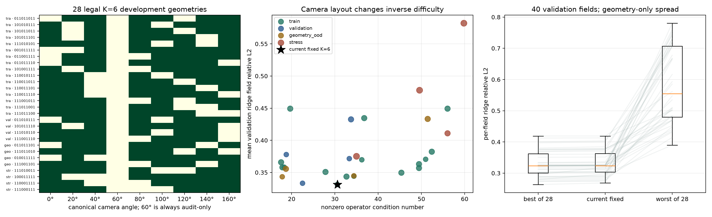
每个原始场只分配一个几何，分配在各 source split 内严格均衡。训练、validation、geometry-OOD 与 stress 布局在训练前冻结，全视角噪声按场共享，不把噪声重采样当成几何收益。
one field / one geometry；压缩 NPZ 仅留本机。
160 个场，几何熵 4.00 bit。
与训练布局完全不相交。
只授权五组、三种子功能 pilot；真实 geometry 与 blind final 未开放。
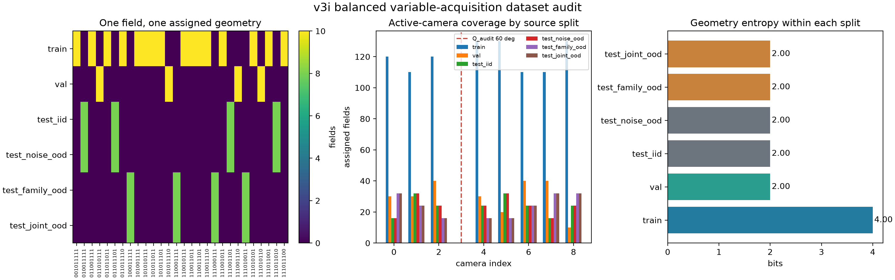
4 个等参数 adapter × 3 种子 × 24 epochs，全部在未见 validation 布局上选 checkpoint。shuffled geometry 在各 partition 内使用无固定点一一错配，与 batch 顺序无关。
static spectral adapter 相对 locked FNO 的 validation 改善。
CI 跨 0，只有 1/3 种子为正。
确定性错几何并不比正确几何差。
同权重替换 descriptor 时 correction 的平均相对变化。
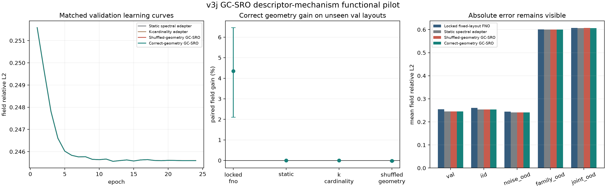
每个 field 在 epoch 间重采样多个布局，不增加模型容量；区分 one-field/one-geometry 监督不足与结构失效。
若反事实监督仍失败，让体素级 correction 直接看逐视角反投影与角度，而不是只接收全局 FiLM 向量。
还需变几何训练的 FNO/VIDON-style 强基线、真实 camera/ray calibration 与新 blind final。
M1 让每个训练场的一个布局重复 4 次；M4 让同一场看到 4 个不同布局。两臂都是 160 个独立场、640 行、相同优化步和 1,023 个可训练参数，validation 对每个场评估全部 4 个未见布局。
CI [+0.0410%, +0.0952%]；3/3 seeds 正向。
CI [+0.0126%, +0.0580%]；多布局有小作用。
正确/错配 descriptor 已明显改变空间 correction。
同模型 swap CI [-0.0138%, +0.0391%]，改动未对准误差方向。
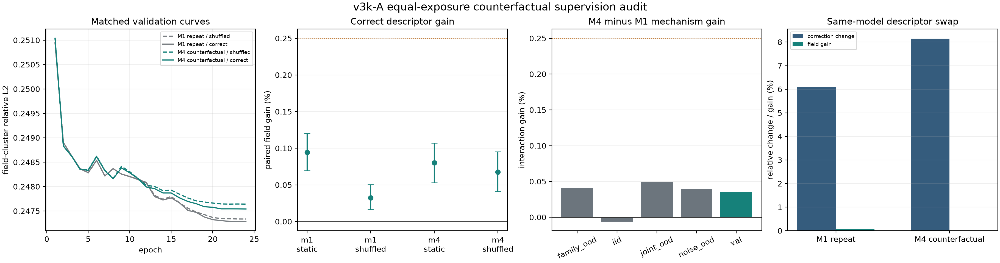
反事实监督让 correction swap 从 v3j 的 0.1785% 升至 8.1399%，说明几何信息已经进入模型；瓶颈变成“修正方向是否对应局部射线欠定误差”。
每个体素直接聚合逐视角 backprojection、mask 与角度 token；共享相机编码器 + masked attention/Deep Sets + zero-init support-limited correction。
空间机制先胜 static/shuffled，再补 variable-geometry FNO/VIDON 强基线、真实 camera/ray calibration 和新的 blind final。
设计、结果与 v3k-B 学习路线40 条配对机制表20 条 M4-M1 交互960 条 swap 诊断正式 runner独立 validator
M4 等曝光数据上的 4 方法 × 3 种子匹配实验。所有方法共用 frozen FNO、160 个训练场、每场 4 布局、24 epochs 和 915 个可训练参数。
CI [+0.5149%, +2.3801%]；3/3 seeds 正向。
CI [-0.4023%, -0.0075%]；正确配对反而更差。
同权重只重排 active-ray 角度配对，correction 已显著变化。
CI [-0.6490%, -0.1108%]；0/3 seeds 正向。
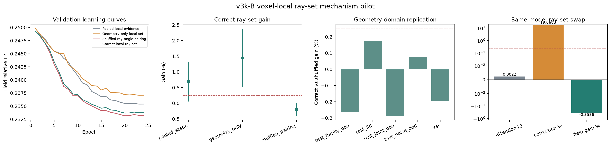
正式 shuffled-pairing 保持完全相同的 mask、ray values 和 angle multiset，只在每个 active camera set 内循环重排角度，168 行均无 fixed point。
预试中曾用整个布局 derangement，它错误地激活了底座未见的相机，已停止且未纳入正式结果。
纯数值 projected Landweber 已通过代数、field/Q_audit 与 OOD 闸门。它现在是强基线，不是论文创新。
完整负结果与 v3k-C 铺路20 条机制配对480 条 swap 证据168 行配对清单正式 runner独立 validator
Learned Primal-DualIterative deep inverse problemsVIDONSet Transformer
从同一个冻结 FNO 起点出发，分开 raw FNO、非负硬支撑投影、standard Landweber 和 Jacobi-Landweber。选择函数只读 validation field error，写入 commit 后才计算 Q_audit 与四个 development test domains。
28 个布局的最大内积相对误差。
中心有限差分与显式梯度的最大相对误差。
raw FNO 只做相同非负硬支撑投影的 validation 场级收益。
95% field-cluster CI [+40.1023%, +49.1099%]。
四个 development test domains 中最小的平均场级收益。
但最坏单场 -17.5799%，>1% harm rate 9.375%。
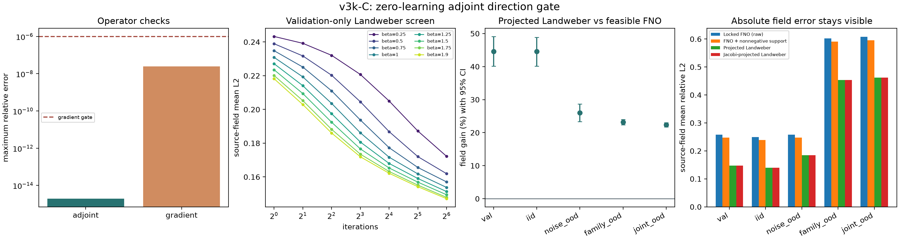
soft support 不是幂等投影，旧结果已作废；正式版使用 1[support>0]·ReLU(x)，并从 selection artifact 完全删除 Q_audit/reprojection 列。
Aᵀ(y-Ax) 是声明 forward 数据项的负梯度，不是“真实场误差保证下降”。当前 forward 还是分 z 切片的线性 toy operator。
先加 global absolute step、closed-form line search、K/noise lookup 和 ridge-start；候选 0<βθ(q)<2 必须按相同 A/Aᵀ 调用数降低均值与尾部风险。
完整结果、四周学习路线与师兄问题112 格选择表20 组场级比较20 个布局 cell正式 runner独立 validator
Iterative deep inverse problemsLearned Primal-DualMoDLLearned operator correction
以下均为官方论文页。它们不是“灵感列表”，而是 v3d 必须实现或明确区分的最近邻。
已系统比较 Fourier operator PEFT，并按频率复杂度分配 adapter 容量；还报告 LoRA 在该场景明显偏弱。
已经对 FFNO 谱核做 reduced-rank factorization，并发现 rank 存在性能饱和点。
已用全局 tensor factorization 压缩 Fourier-domain parameters；参数压缩本身不是本项目贡献。
geometry-informed operator 概念已存在，但它处理物理域形状；本项目需证明采集算子几何的不同问题。
正确 geometry 必须同时胜 shuffled geometry、constant geometry 与同 rank static adapter，否则 geometry claim 失败。
只有相对最强 PEFT control 的 CI、三种子、p10、harm、Q_audit 与成本全部过门槛，才申请封存 blind final。
基线只允许用 validation 选择；Q_audit、test field 和最终图都不能回头改模型。
| 三种子训练完成后自动载入。 |
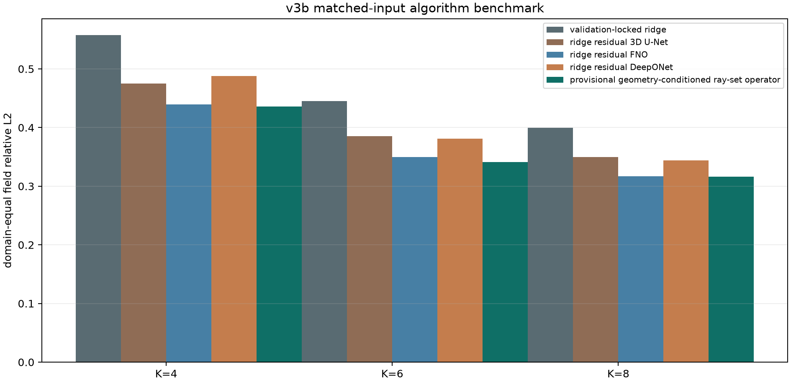
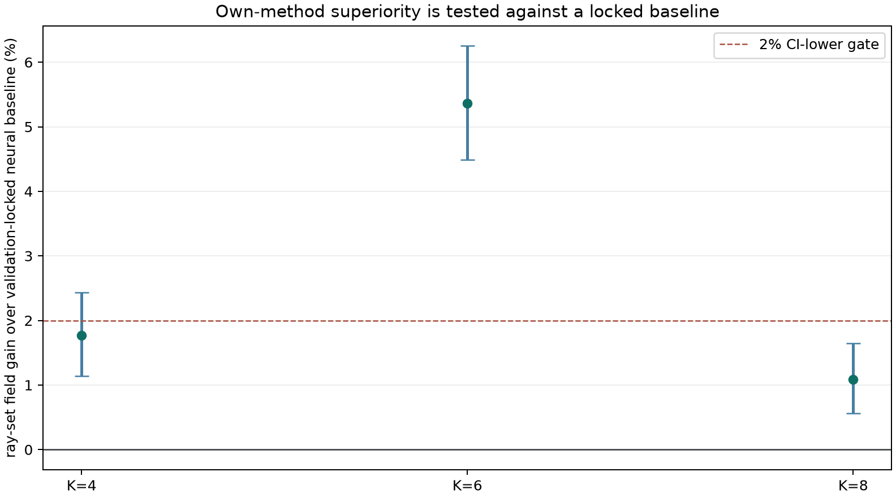
开发筛选、确认性实验和论文级真实验证分三层增加对手。
强数值锚点；validation 选正则，不用 test 选。
排除“网络只是在修复过弱 FBP”的解释。同 ray/angle/ridge 输入、同 loss、同 epoch；参数约为候选两倍。
排除普通局部卷积已足够。carry continuation-Adam + restart cosine 到 240 epochs；完整 validation curve、long-cosine control 和 v3e 成本坐标同报。
branch 编码 pooled ray views，trunk 查询坐标；rank/三维 pooling/学习率已有 72-run 有界筛选。
短程 rank-64 冠军未替换 rank-48 长程 reference。相同 K、相同 geometry、validation 锁迭代数和正则。
防止学习收益只是传统法没调好。按实际 A/Aᵀ calls 比较固定步、逐场二次步与 strict/wide BB1/BB2。
下一必要对手是全 trial-call 记账 SPG 与 noise-aware stopping。根据静态/时序任务选择；operator-only 和各自 + same NeRIF refinement 分开。
不能让自有模型独享 physics refinement。主对手是 continued FNO；CI 下界>0；p10≥-2%；伤害率≤10%；clean Q_audit≥-1%；三个 seed 均值全正。当前全部未通过。
固定 60/120/180/240 epoch compute checkpoints；同时胜 validation 冠军与 plateaued control；CI 下界>0、p10≥0、伤害率≤5%，OOD/Q_audit 不反向。
方法和分析冻结后才生成全新 blind fields；加入独立 forward/真实样例，不能继续用 dev2 调 rank、频带或阈值。
参数、MACs/FLOPs、峰值显存、训练时间、推理时间与摊销盈亏点并列，不能只报参数量。
轮换多个 audit cameras；clean/noisy 双版本；geometry drift、missing camera、最大角间隙和 cone-ray forward。
与 random/ridge/FNO/DeepONet warm-start 共用同一 NeRIF、optimizer、K 与 stop rule；比较端到端 time-to-quality。
新盲测不能稳定超过 FNO/DeepONet，或只靠更多参数/测试调参取胜：停止“新模型”主张，转为失败边界研究。
frozen per-view 3D adapter 已停止并保留为负对照，不通过加 width 追平。
raw local rays 相对 geometry-only 有用，但 scalar angle pairing 在群体统计和同模型 swap 中都使最终场变差；不再加 attention heads 或 hidden width。
wide alternating PBB 在 128 calls 下达到 0.138640，但 validation tail 37.5%、noise-OOD -11.56%；下一步先做 discrepancy/residual-whiteness/SPG，不训练停止网络。
请师兄确认曲线光路的 F(x)/J(x)ᵀ 或可微 forward loss，并锁定单位、mask、坐标、support 与 Q_audit。
先完成 global step、line search、lookup 与 ridge-start controls，再只学有界 scalar step/stopping；未胜强对手就不开 voxel preconditioner。
检查谱模态、低秩 rank 与 ridge 已足够强时的过修正；只在新 validation fields 上选择 budget-conditioned shrinkage，并始终保留同 rank plain adapter。
不继续追均值；加入 per-field risk predictor、worst-domain loss、near-null thin-front adversary，并报告 selective fallback 系统风险。
说明 model 在 used views 上学得更像，但三维方向错。先增加多 audit camera、geometry jitter 与 clean/noisy 双审计；只有 v3d 过门槛后才允许检验 NeRIF physics refinement。
研究 continuous query/basis 是否更适合当前低分辨率；自有方法可转向 geometry-conditioned branch 或 modulation，而不是强行保留 attention。
网站和代理可以帮你铺路，但论文答辩时这些必须由你自己推导、运行和解释。
为什么所有模型都必须看到同样的 ridge、ray、mask、angle、support 和坐标？
产物：一张 channel manifest。推导 branch coefficient 与 trunk basis 的内积输出，手算 rank/pool 参数量，并解释短程排名为何在 240 epochs 翻转。
产物：shape 表、参数量和自己复画的 screen/长程曲线。理解 modes、hidden width、local path 和为什么 ray-set 统计只是额外归纳偏置。
产物：1D FFT toy。读懂 LoRA、vanilla adapter、F-Adapter 和低秩谱核的差别，再实现 geometry-conditioned coefficients 与零初始化回退。
产物：shape 推导、参数/成本表与 geometry shuffle 单元测试。从 field-level delta 算 mean、p10、harm、分层 bootstrap 和 seed variation。
产物：复算一档 K 的表。把 near-null geometry、thin front、used-view residual 和 Q_audit 误差连成物理解释。
产物：一张失败案例图。解释 Adam moments、block cosine 与 long cosine；为什么 long-cosine 已 plateau 却不是 validation 冠军。
产物：复画 24→240 validation/error/time 曲线。先从 v3e 手算 MAC/FLOPs、参数、内存与 latency，再给所有候选补 60/120/180/240 validation curve。
产物：time-to-target、Pareto 表和“4,988 参数为何仍慢”的口述解释。能说清 intrinsics、extrinsics、ray table、mask、displacement、坐标轴、单位和 held-out audit view 的角色。
产物：给一个脱敏样例写 shape/unit/role manifest。先按 field 折叠 4 layouts 和 3 seeds，再复算 correct-vs-shuffled 与 M4-M1 interaction；解释为什么 20,160 行不等于 20,160 个独立样本。
产物：一页因果对照表与 +0.25% 门槛说明。逐体素标出 per-view backprojection token、mask、angle pairing 和 zero-init correction，说清为什么 whole-layout shuffle 不公平。
产物：自己复算 correct-vs-geometry-only 和 correct-vs-pairing-shuffle 的方向相反。从 1/2 ||Ax-y||² 推到 Aᵀ(Ax-y)，再解释为什么 Aᵀ(y-Ax₀) 比单独传角度更贴近应修正的方向。
运行 10 项单测与 validator，从 112 格 screen 找回 β=1.9,T=64，再检查 selection artifact 无 Q_audit 列。